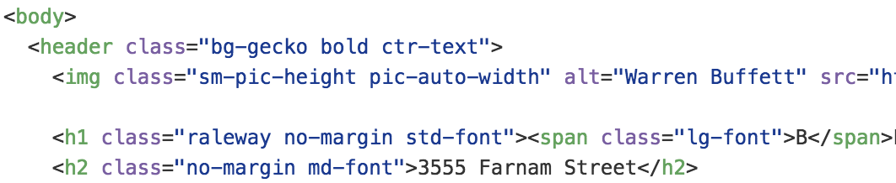
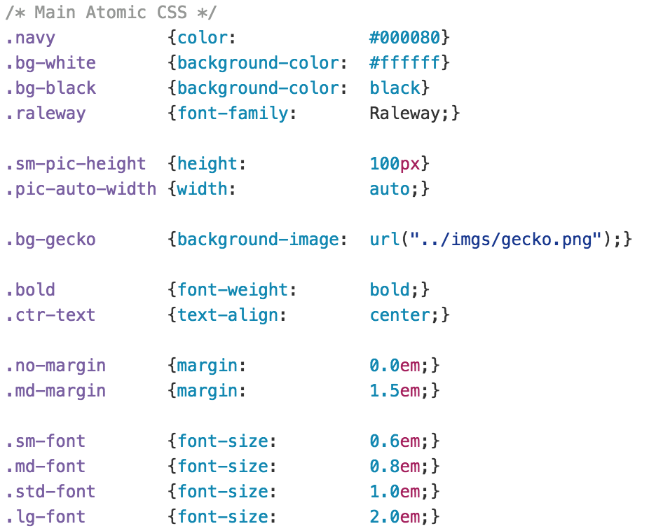

Atomic CSS
As I've been learning how to make webpages, I've been required to utilize HTML (Hyper Text Markup Language) and CSS (Cascading Style Sheets), the fundamental building blocks of a website. The idea is that the HTML provides all the content and the CSS provides all the styling.
This makes sense because you can have some content and style it all different ways and have that styling be utilized across all your pages. In terms of not repeating yourself, you're able to use one (or a few) set(s) of styles across as may webpages as you like.
Although it may seem simple, it gets a little more complicated as you make more complex websites. There are a lot of creative designs out there to make webpages very fancy with different colors, styles, animations, etc. Add to that the need now to accommodate for screensizes ranging from the size of a watch to a gigantic projector, and you get some complicated CSS.
To help web designers and developers, some people have developed frameworks to help set a standard for how things look in your web browser. This has led to a lot of people using templates that offer a lot, but so much that it's confusing to modify.
Enter Atomic CSS. This is an approach to structuring CSS that has been around a few years, but not a lot of people utilize. It emphasizes using Classes above everything else, especially IDs. This in general allows styling to be utilized for multiple items, but Atomic CSS takes it even further. They focus on just one style per class. This allows you to build up styles "atom-by-atom" into "molecules" and then into larger organisms, templates, pages, etc.
I thought this was mind-blowing! If you utilize this Atomic CSS philosophy, you just have "mini-classes" in your CSS that only edit one style at a time, so when you want to style your HTML, you can just tag on things you want to change on your website.
For example, see the below:  
This shows how you can just add classes into the HTML to stack styles. Want bold and centered text on an item? No problem, just add "bold" and "ctr-text" to your class for that item!
Now if another item somewhere else in the HTML only needs "bold", you can just include that class without changing the styles for a whole tag or create a lot of div containers that don't tell you how something looks.
So those are all the advantages to Atomic CSS. But why hasn't it hit the mainstream? Shouldn't everyone be using it to code all their websites?! Well, unfortunately, there are downsides to all of this and maybe that's why not everyone uses it.
One of the pros and cons of having Atomic classes is that you need to stack the styles in the classes. This allows it to be super dynamic for different items that need to be styled, but it also adds a lot of classes for potentially a lot of items in HTML. And that breaks the cherished split of HTML and CSS. Now the CSS is just a list of building blocks and the HTML is styled with individual "atoms."
Some people don't like this. It breaks the ability to instantly change a CSS file and have a completely different looking website. What you gain is the readability of your code and simplicity in understanding and modifying your CSS.
Whether Atomic CSS lasts, time will tell, but in the meantime, test it out for yourself and let the world know what you think! I for one, find it a lot easier to wrap my head around and I can always modify my CSS so that it's a blend of Atomic and some styling of whole tags.